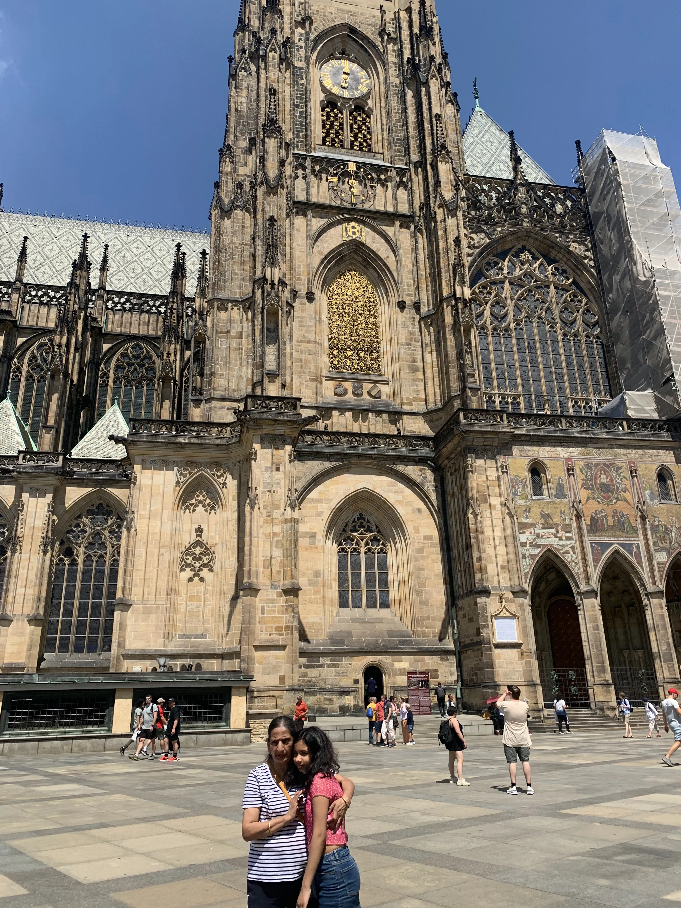
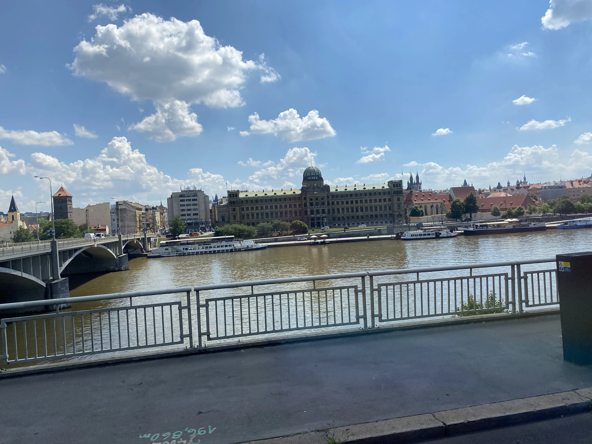
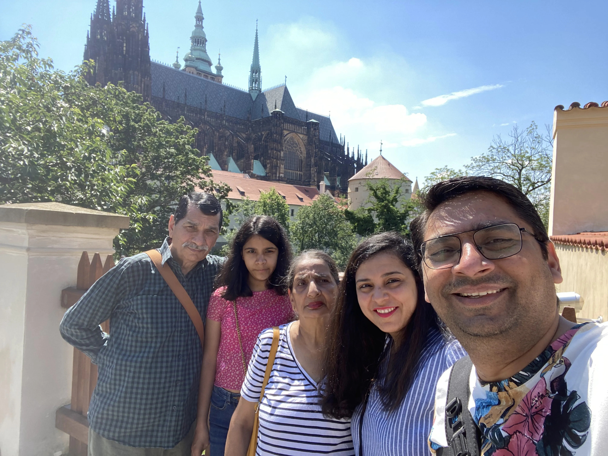

The air in Prague, even in the bustling summer of June, carries a whisper of centuries. It’s not just the scent of Trdelník or freshly brewed coffee, but a deeper aroma – the ancient stone of a thousand gothic arches, the murmur of the Vltava River beneath the Charles Bridge, and the echo of history that seems to cling to every cobblestone. As a Desi European, I've seen many cities, but Prague offers something uniquely profound, a blend of fairytale magic and grounded grandeur that truly captures the soul.
Where History Breathes
Walking through Prague is like stepping into a living storybook. The city unfolds in layers of Baroque, Gothic, and Renaissance artistry, each building a testament to a rich and often turbulent past. Our journey often led us to the majestic Prague Castle complex. The sheer scale of St. Vitus Cathedral, with its intricate carvings and towering spires reaching for the heavens, left us all speechless. My parents, typically stoic, couldn't help but gaze up in open admiration, while our daughter, usually glued to her phone, was busy snapping photos, trying to capture its immense beauty.


From the Castle, the views across the city were breathtaking – a sea of terracotta rooftops punctuated by countless spires, a sight that truly earns Prague its moniker, 'The City of a Hundred Spires.' We spent hours simply absorbing the panorama, tracing the meandering path of the Vltava as it wove its way through the heart of the city. Each bridge, each building seemed to tell a tale, inviting us to imagine the lives lived within their walls.
A Desi European Family's Tale
This trip wasn't just about the sights; it was about the moments we shared as a family. My wife and I, constantly on the go, found ourselves slowing down, allowing my parents to set the pace and our daughter to explore with curiosity. We’d find ourselves pausing at a quaint cafe for a coffee and some Czech pastry, or simply resting on a bench, soaking in the atmosphere. My father, with his keen eye for history, would often point out architectural details or share anecdotes he’d read, bringing the ancient stones to life.
There’s a unique joy in seeing our Indian heritage meet European charm. While my parents marveled at the sheer antiquity and scale of structures so different from anything back home, our daughter found universal delight in the vibrant street art and the quirky shops. We even managed to pack some thepla for our longer excursions, a little taste of home amidst the grandeur of Central Europe. It was a beautiful blend: us, a Desi family, weaving our own narrative into the tapestry of Prague's history, finding shared laughter and quiet contemplation in equal measure.

Walking hand-in-hand with my father, discussing the intricate engineering of the castle walls, felt like a bridge between generations, much like the Charles Bridge itself connecting two sides of the city. These are the moments that stick, the quiet connections forged against a backdrop of magnificent history.
The Enduring Soul of Prague
As our time in Prague drew to a close, I realized the city had done more than just impress us with its beauty. It had embraced us, offering a space where history felt tangible, where every corner held a new discovery, and where family bonds were strengthened amidst the echoes of time. The soul of Prague, I believe, lies in its enduring spirit – a city that has witnessed so much, yet continues to charm, inspire, and captivate with unwavering grace. It’s a city that doesn't just show you its past; it invites you to become a part of its ongoing story. And for our Desi European family, it was a chapter we'll cherish forever.